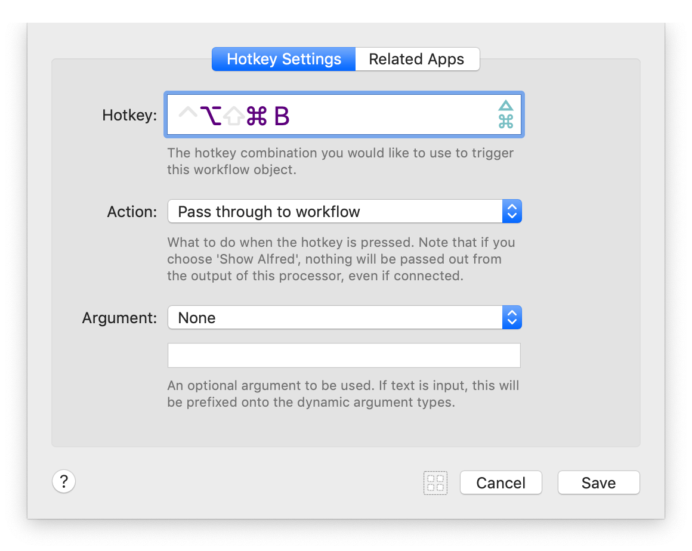
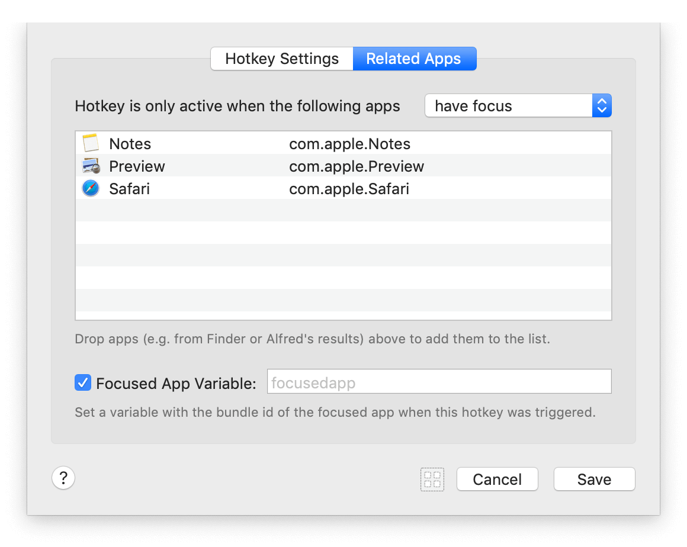
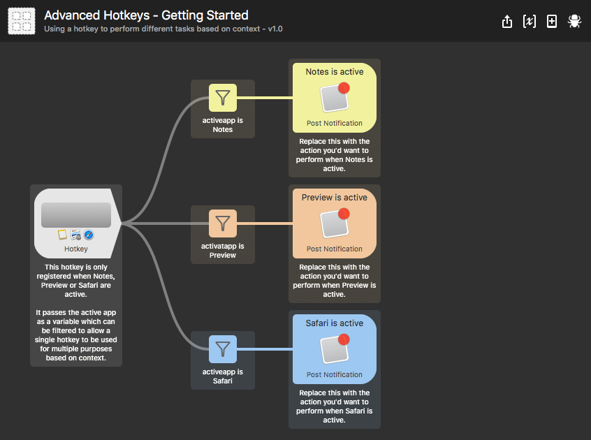
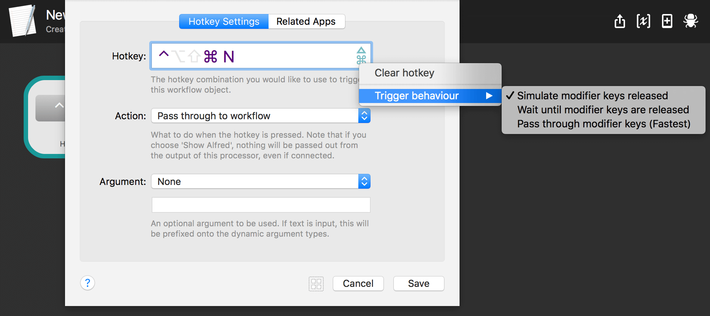

Hotkey Triggers
Hotkey triggers can be used to perform an action without showing Alfred, or show Alfred with information pre-filled in.

Setting your hotkey
Pick a hotkey
You can use any hotkey not already reserved by macOS or Alfred. If the hotkey you'd like to use potentially clashes with an existing one in an app you use frequently, take a look at the Related Apps header below.
Hotkey action
Choose what you want the hotkey to do:
- Pass your {query} through to the workflow it's connected to, or
- Show Alfred
Argument
The Argument dropdown allows you to choose what information is through to Alfred.
- Selection in macOS uses the currently selected text or file
- macOS Clipboard Contents uses the text content of your clipboard
- macOS Find Pasteboard uses the content of the macOS Pasteboard
- Text allows you to specify static text to pass through
- Or None launches the hotkey without an argument at all
When choosing to show Alfred with the Clipboard contents, Selection or Pasteboard, you can prefix the argument with a keyword, and choose whether to set the cursor to the right or left. This then allows you to start typing as soon as Alfred is shown.
What is the Pasteboard?
The macOS Pasteboard is a separate clipboard; it can be used by pressing Cmd + E in any native/standard macOS app. Alfred then has access to this secondary pasteboard to use with the Hotkey Trigger, keeping it separate from the usual clipboard. Take a look under Edit > Find > Use Selection For Find in a native app to use it.
Contextual Hotkeys (Related Apps)
You can also specify in which applications you want the hotkey to be applied or ignored.

Use Alfred to search for the applications you want the hotkey to relate to and drag them into the Related Apps section of the hotkey dropdown sheet.
- Choose "Hotkey is only active when the following apps have focus" to tell Alfred to only make the hotkey active when the apps you've dragged are the current focused apps.
- Choose "don't have focus" to tell Alfred to ignore the hotkey when the apps you've dragged in are in focus.
This feature makes it possible to use, for example, a hotkey to perform an action in every application except Photoshop, where the hotkey might already have its purpose.
Using the same hotkey for multiple actions
The same hotkey can be used more than once, allowing you to set a different action to be performed depending which app is in focus. You can copy and paste the hotkey trigger on the canvas, which retains the hotkey you've set.
Focused App Variable
Want to create a workflow that performs a different action depending on which app is in focus when the hotkey is triggered? Check the box for "Focused App Variable" to pass the app name through to your workflow.
To see this concept in action, add the "Advanced Hotkeys" workflow example from the Getting Started menu in the Workflows preferences.

Want to learn more about workflow variables? Take a look at the guide on setting variables in workflows.
Example workflows using hotkeys
You can find two built-in hotkey workflows in Alfred's Workflows preferences.
Click the [+] in the bottom left of the Workflows preferences. Under Getting Started, you'll find:
- Hotkeys: A simple hotkeys workflow, demonstrating how to set a hotkey trigger to launch one or more files/apps.
- Advanced Hotkeys: A workflow showing you how to use one hotkey to perform multiple different actions, depending on the active application when the hotkey is triggered.
You'll also find template workflows which use hotkeys under the Templates sub-menu.
Tips for working with hotkeys
If you're having any issues with hotkeys, take a look at the Hotkey Troubleshooting for frequently asked questions and tips.
How can I make global hotkeys faster?
To ensure that hotkeys always work smoothly on your Mac, Alfred waits a few milliseconds before letting the modifier keys (alt, cmd, ctrl) go before performing the action associated to your hotkey combination.
If you want to speed this up, you can change the trigger behaviour to pass the modifier keys through and give you faster hotkeys. Click the green icon to the right of the hotkey field to change this.
